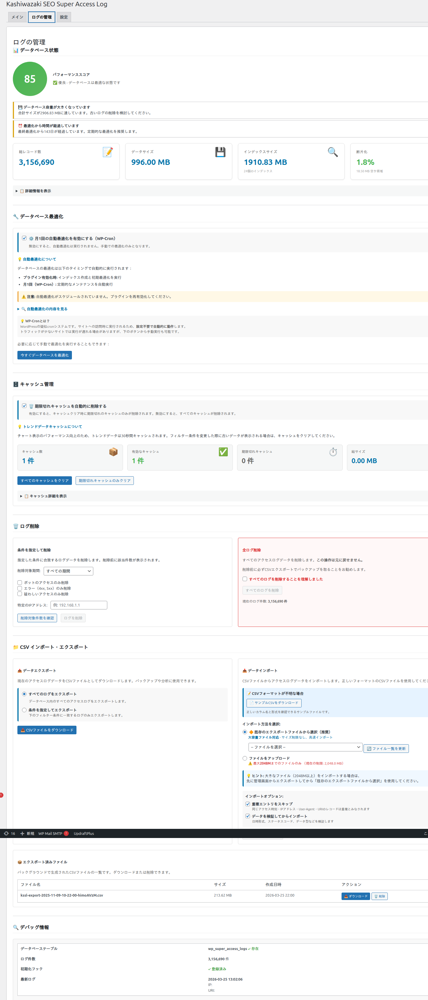

ログ管理
アクセスログの閲覧、フィルタリング、Chart.jsによるトレンドチャート表示、CSV出力・インポートなどのログ管理機能を解説します。
アクセスログの閲覧
管理画面のログ一覧では、記録されたアクセスログをテーブル形式で確認できます。

表示カラム
| カラム名 | 説明 |
|---|---|
| 日時 | アクセスが記録された日時 |
| 訪問者ID | Cookie IDベースの訪問者識別子 |
| IPアドレス | アクセス元のIPアドレス |
| リクエストURL | アクセスされたページのURL |
| User-Agent | ブラウザ・ボットのUser-Agent文字列 |
| ボット判定 | ボット検出パターンに一致したかどうか |
表示カラムは設定画面でカスタマイズ可能です。必要なカラムのみを表示して視認性を高めることができます。
フィルタリング
ログ一覧は様々な条件でフィルタリングできます。
| フィルタ条件 | 説明 |
|---|---|
| 日付範囲 | 開始日と終了日を指定してログを絞り込み |
| 訪問者ID | 特定の訪問者IDに絞り込み |
| IPアドレス | 特定のIPアドレスに絞り込み |
| URL | リクエストURLのキーワードで絞り込み |
| ボット/ヒューマン | ボットアクセスまたは実ユーザーアクセスに絞り込み |
ログ一覧上部のフィルタエリアで条件を入力または選択します。
「フィルタ適用」ボタンをクリックすると、AJAXで条件に一致するログのみが表示されます。
「フィルタクリア」ボタンで条件をリセットし、全ログを表示できます。
トレンドチャート
Chart.jsを使用したトレンドチャートで、アクセス傾向を視覚的に把握できます。
チャートの種類
| チャート | 表示内容 |
|---|---|
| アクセス推移 | 日別・時間別のアクセス数推移を折れ線グラフで表示 |
| ページ別アクセス | アクセスの多いページをランキング形式で表示 |
| ボット割合 | ボットアクセスと実ユーザーアクセスの比率を表示 |
チャートの最大レコード数は設定で制限できます（デフォルト: 100,000件）。大量のログデータがある場合、チャート表示のパフォーマンスに影響する可能性があります。
CSV出力
アクセスログをCSV形式でエクスポートできます。
ログ管理画面で「CSVエクスポート」ボタンをクリックします。
現在のフィルタ条件が適用されたログデータがCSVファイルとしてダウンロードされます。
ダウンロードしたCSVファイルは、Excel、Googleスプレッドシート、その他の分析ツールで活用できます。
定期的にCSVエクスポートを行い、データ保持期間で自動削除される前のログをバックアップすることを推奨します。
CSVインポート
以前エクスポートしたCSVファイルをインポートして、ログデータを復元できます。
ログ管理画面で「CSVインポート」ボタンをクリックします。
インポートするCSVファイルを選択します。ファイル形式は本プラグインでエクスポートしたCSV形式に準拠している必要があります。
インポートが実行され、データがカスタムテーブルに追加されます。
大量のデータをインポートする場合、処理に時間がかかる場合があります。PHPの実行時間制限やメモリ制限に注意してください。
訪問者ブロック
特定の訪問者IDやUser-Agentからのアクセスをブロックする機能があります。
| ブロック種別 | 説明 |
|---|---|
| 訪問者IDブロック | 特定のCookie IDを持つ訪問者のアクセスをログから除外 |
| User-Agentブロック | 特定のUser-Agentパターンに一致するアクセスをブロック |
自動クリーンアップ
設定した保持期間を超えたログデータは、Cronジョブ（kssl_cleanup_old_logs）により自動的に削除されます。また、月次の最適化Cron（kssl_monthly_optimization）により、テーブルの最適化が実行されます。
自動クリーンアップはバッチ処理（1,000件ずつ）で実行されるため、サーバーへの負荷を最小限に抑えています。